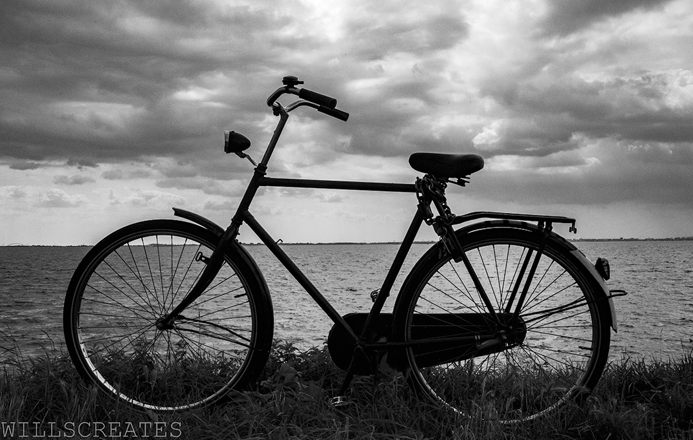
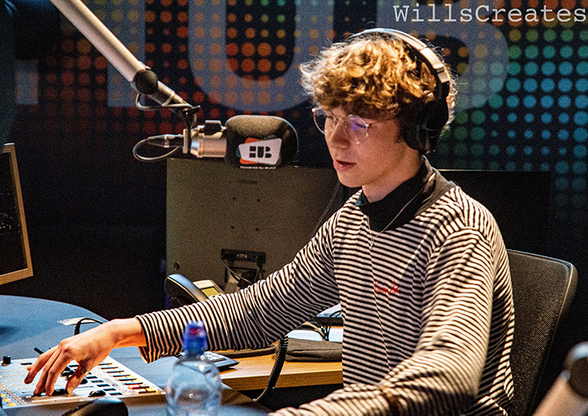

University Projects
Created a children's book which won the best story award from the university.
Head of programming of HUB Radio, Breda University's College Radio. I also host the Perskeptive Podcast, which covers conspiracy theories and ghost stories, and I host the Great British Band Show, the sorce of Great British music.

Started freelance photography and have worked with multiple events as their photographer. However I am mainly geared towards lanscape, black and white, and portrait photography.
Personal Projects
Started freelance photography and have worked with multiple events as their photographer. However I am mainly geared towards lanscape, black and white, and portrait photography.
I help and advise fellow freelancers or start ups with different consultancy topics such as production design and directing photography for different shoots.

Volunteer work in Cambodia as an English teacher to primary and secondary level education.